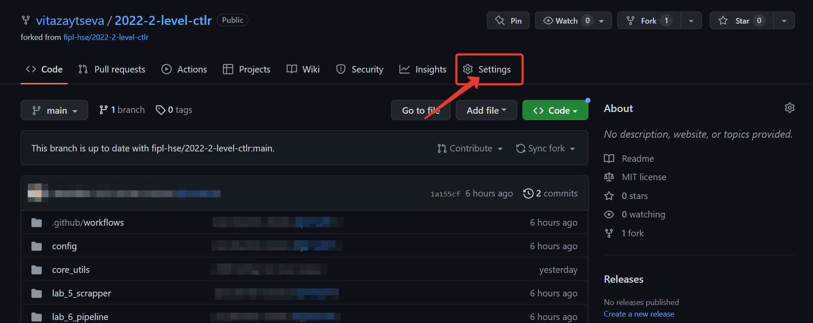
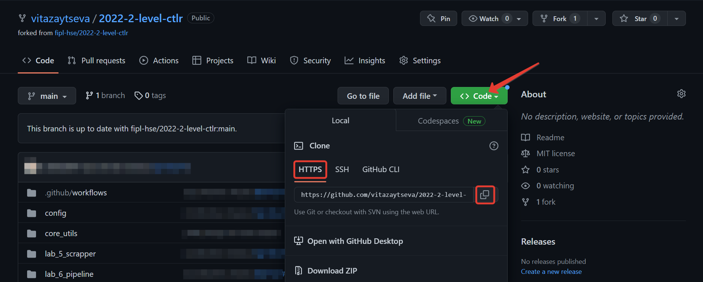
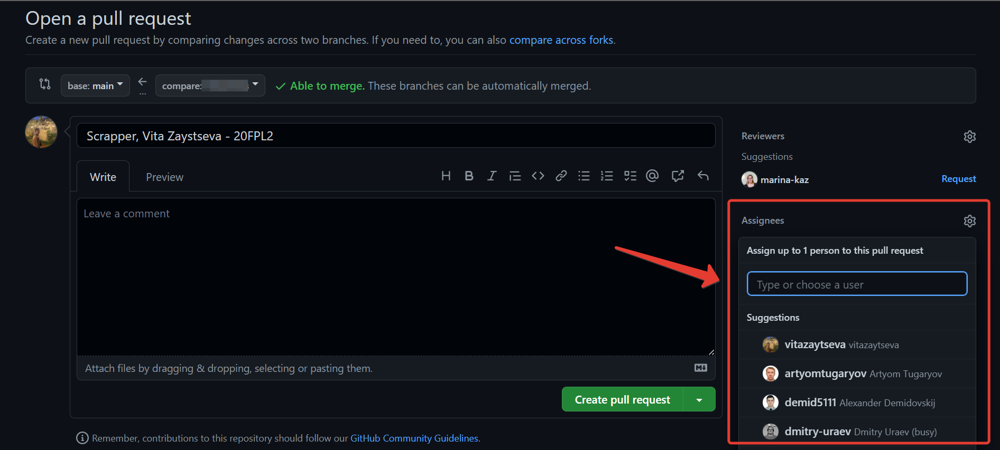

Подготовка к прохождению курса
Перед началом прохождения курса “Программирование для лингвистов” каждому студенту необходимо сделать несколько шагов, которые подготовят необходимые инструменты к дальнейшей работе.
Установка интерпретатора языка программирования Python
Чтобы установить интерпретатор языка программирования Python на свой компьютер, выполните следующие шаги:
Скачайте установочный файл для своей системы с официального сайта.
Important
Для скачивания нажмите кнопку Download Python 3.XX.XX.
Версия Python должна быть = 3.12!
Запустите установочный файл и следуйте указаниям по установке.
Проверьте корректность установки:
Откройте терминал и выполните следующую команду:
Mac:
python3 --versionWindows:
python --version
Вы должны увидеть строку, похожую на следующую:
Python 3.12.11
Note
Если Вы не знаете, как открыть терминал, перейдите на шаг Как открыть терминал.
Установка системы контроля версий Git
Чтобы установить систему контроля версий Git, выполните следующие шаги:
Скачайте установочный файл для своей системы с официального сайта:
Important
Для скачивания нажмите кнопку Download for <название ОС>.
Запустите установочный файл и следуйте указаниям по установке
Проверьте корректность установки:
Откройте терминал и выполните следующую команду:
git
Вы должны увидеть строку, похожую на следующую:
usage: git ...
Note
Если Вы не знаете, как открыть терминал, перейдите на шаг Как открыть терминал.
Установка среды разработки Visual Studio Code
Чтобы установить среду разработки Visual Studio Code, выполните следующие шаги:
Скачайте установочный файл для своей системы с официального сайта:
Запустите установочный файл и следуйте указаниям по установке.
Проверьте корректность установки:
Откройте Visual Studio Code из меню приложений.
Вы должны увидеть похожий интерфейс:
Регистрация на платформе GitHub
Чтобы зарегистрироваться на платформе GitHub, выполните следующие шаги:
Откройте главную страницу платформы.
В верхнем правом углу нажмите кнопку
Sign up:Пройдите регистрацию.
Note
Рекомендуется использовать личную почту, чтобы после окончания учёбы не пришлось менять почту с учебной на личную.
Note
Рекомендуется (но не обязательно) в качестве логина
использовать фамилию и имя. Пример: AndreiKashchikhin.
Создание форка репозитория
Чтобы создать форк репозитория на платформе GitHub, выполните следующие шаги:
Откройте сайт репозитория, который Вам прислал преподаватель.
В верхнем правом углу нажмите кнопку
Fork:На открывшейся странице нажмите кнопку
Create Fork:
Форк создан. Обратите внимание на ссылку в адресной строке браузера: она будет содержать имя Вашего GitHub пользователя и название репозитория:
https://github.com/<имя-Вашего-пользователя>/202X-2-level-labs
Добавления менторов в коллабораторы
В Ваш форк можете вносить изменения только Вы. В процессе прохождения курса может возникнуть ситуация, когда ментору будет необходимо внести изменения в Ваш форк (добавить изменения из основного форка, разрешить конфликты и т.д.).
Чтобы у менторов была возможность вносить изменения в Ваш форк, их нужно добавить в коллабораторы. Для этого выполните следующие шаги:
Откройте сайт форка, который Вы создали на шаге Создание форка репозитория.
Important
Обратите внимание на ссылку в адресной строке браузера: она будет содержать имя Вашего GitHub пользователя и название репозитория.
Нажмите кнопку
Settings:Слева выберите вкладку
Collaborators:
Нажмите кнопку
Add people:
В открывшемся окне введите имя GitHub пользователя ментора и выберите его из списка:

Нажмите кнопку
Add <имя-пользователя> to this repository:
Вы отправили запрос ментору на добавления в коллабораторы:

Important
После данного шага обязательно напишите добавленному ментору, чтобы он мог принять запрос.
Проделайте шаги 4-7 для всех менторов курса. Точный список менторов уточняйте у преподавателей.
Клонирование форка репозитория для локальной работы
Чтобы склонировать форк на Вашу систему, выполните следующие шаги:
Откройте сайт Вашего форка, который Вы создали на предыдущем шаге.
Нажмите кнопку
Code, выберитеHTTPSи нажмите кнопку копирования:Откройте терминал и перейдите в удобную папку:
Чтобы переходить из папки в папку в терминале, используйте команду
cd <название-папки>.Пример:
cd work.
Выполните следующую команду для клонирования репозитория:
git clone <ссылка-на-ваш-форк>Пример:
git clone https://github.com/sofianurtdinova/2023-2-level-labs
Important
Ссылку на форк Вы скопировали ранее на шаге №2.
Note
Если Вы не знаете, как открыть терминал, перейдите на шаг Как открыть терминал.
Создание проекта в среде разработки Visual Studio Code
Чтобы создать проект и работать с Вашим форком в среде разработки Visual Studio Code, выполните следующие шаги:
Откройте Visual Studio Code и нажмите кнопку
Open:В открывшемся окне выберите папку с форком, который Вы склонировали на шаге Клонирование форка репозитория для локальной работы:
Note
На скриншоте выше показано, что форк был склонирован в
папку Desktop (Рабочий стол).
Important
Нужно выбрать именно папку с форком, имеющую
название 202X-2-level-labs, а не папку с конкретной
лабораторной работой.
В открывшемся окне нажмите кнопку
Yes, I trust the authors:Проект создан, слева Вы можете увидеть файлы проекта:
С помощью значка настроек в левом нижнем углу или сочетанием клавиш
Ctrl + Shift + Pоткройте командную панель:Для создания виртуального окружения введите
Python: Create Environment, после выберитеVenv:Введите путь к нужному интерпретатору.
Для активации виртуального окружения откройте терминал в среде разработки Visual Studio Code нажатием кнопки Terminal -> New Terminal в верхней панели или сочетанием клавиш
Ctrl + `:python -m venv venv
Вы готовы приступить к работе.
Note
Для эффективной работы с Python следует установить
расширение Python. Перейдите во вкладку Extensions в левой
боковой панели (Ctrl+Shift+X).
Введите id расширения в поисковую строку.
Нужное нам - ms-python.python .
Нажмите Install.
Attention
В Visual Studio Code изменения в файлах не сохраняются автоматически,
но доступно автосохранение файлов.
Чтобы его включить, выберите в левом верхнем углу
File -> Auto Save. Для
выбора режима необходимо настраивать автосохранение.
Для этого нажмите сочетание клавиш Ctrl + ,
или значок настроек в левом нижнем углу -> Settings -> в поисковой
строке вбейте Auto save,
после чего выберите один из доступных режимов.
Подробнее о них можно почитать в официальной
документации Visual Studio Code
Изменение исходного кода и отправка изменений в удалённый форк
Основную работу Вы будете вести в файле main.py в папке с каждой
лабораторной работой.
Процесс выглядит следующим образом:
Вы изменяете исходный код в файле
main.py.Вы фиксируете изменения с помощью системы контроля версий
git.Вы отправляете изменения в удалённый форк.
Далее будет пример этого процесса.
Изменение исходного кода
По умолчанию функции не имеют внутри себя реализации - только pass в
теле функции. Ваша задача - реализовать функцию по предоставленному описанию
лабораторной работы.
Фиксация изменений с помощью системы контроля версий git
Git - система контроля версий, которая позволяет сразу нескольким разработчикам сохранять и отслеживать изменения в файлах проекта.
Сейчас мы зафиксируем изменения, сделанные на предыдущем шаге в файле
main.py. Чтобы это сделать, выполните следующие шаги:
Откройте терминал в среде разработки Visual Studio Code нажатием кнопки Terminal -> New Terminal в верхней панели или сочетанием клавиш
Ctrl + `:В терминале выполните команду
git add <путь-до-лабораторной-работы>/main.py:В терминале выполните команду
git commit -m "message":
Note
В качестве message рекомендуется использовать краткое
описание тех изменений, которые Вы сделали. Этот текст будет
публично доступен!
Больше информации о командах, описанных выше, можно найти в официальной документации по Git.
Отправка изменений в удалённый форк
После предыдущего шага изменения находятся в состоянии зафиксированных. Они сохранены только у Вас в системе. Чтобы отправить их в удалённый (находящийся на платформе GitHub) форк, созданный ранее, выполните следующие шаги:
Откройте терминал в среде разработки Visual Studio Code нажатием кнопки Terminal -> New Terminal в верхней панели или сочетанием клавиш
Ctrl + `:В терминале выполните команду
git pull.В терминале выполните команду
git push:Откройте главную страницу Вашего форка. Вы увидите сделанный commit и сообщение, которое Вы написали:
Больше информации о командах, описанных выше, можно найти в официальной документации по Git.
Создание Pull Request
Чтобы менторы смогли увидеть Ваши изменения и сделать проверку, Вам нужно создать Pull Request на платформе GitHub. Для этого выполните следующие шаги:
Откройте сайт репозитория, который Вам прислал преподаватель.
Выберите вкладку Pull Requests:

Нажмите кнопку
New pull request:
Нажмите кнопку
compare across forks:Нажмите
head repositoryи из списка выберите Ваш форк (он будет содержать имя Вашего пользователя):
Нажмите кнопку
Create pull request:
Введите название для Pull Request:

Important
Имя PR должно соответствовать следующему шаблону:
Laboratory work #X, Name Surname - 2XFPLX.
Нажмите
Assigneesи из списка выберите ментора, который указан в таблице успеваемости:Нажмите кнопку
Create pull request:
Note
Pull Request появится в списке PR, который находится на странице из шага №2.
Продолжение работы
Продолжение работы заключается в повторении нескольких шагов:
Вы отправляете изменения в удалённый форк.
Они автоматически будут обновляться и в Pull Request, который Вы создали
Ментор проверяет Ваш код и оставляет комментарии.
Вы исправляете исходный код согласно комментариям.
См. шаг №2.